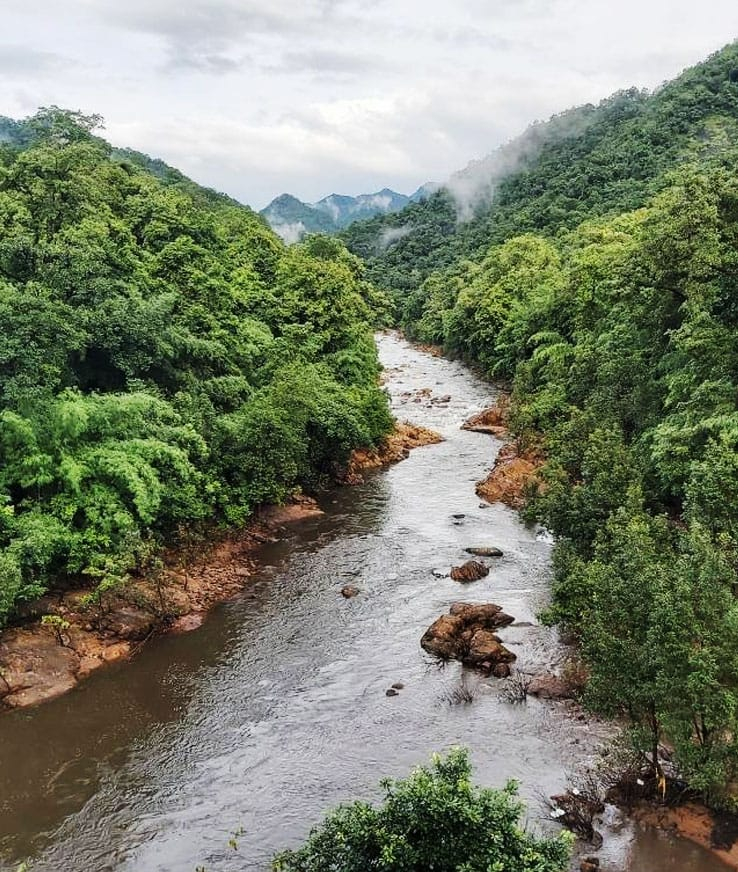
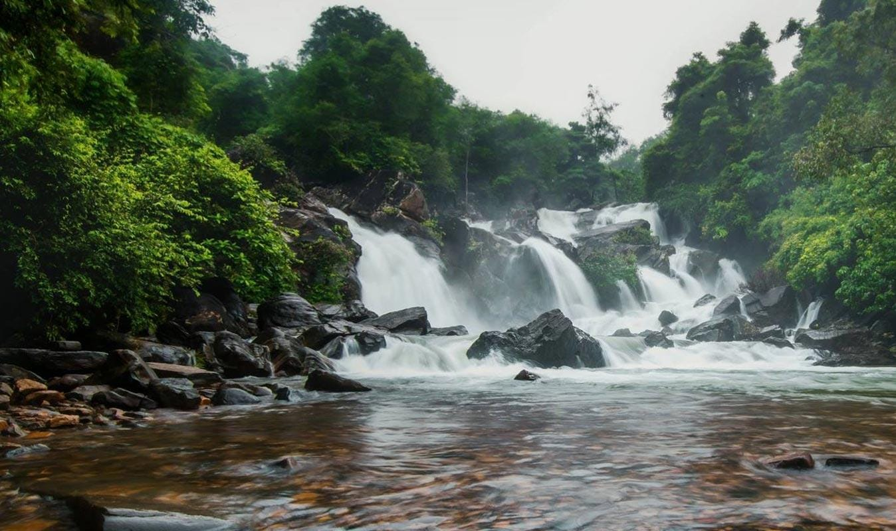
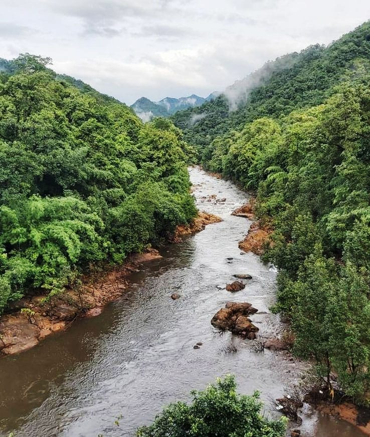
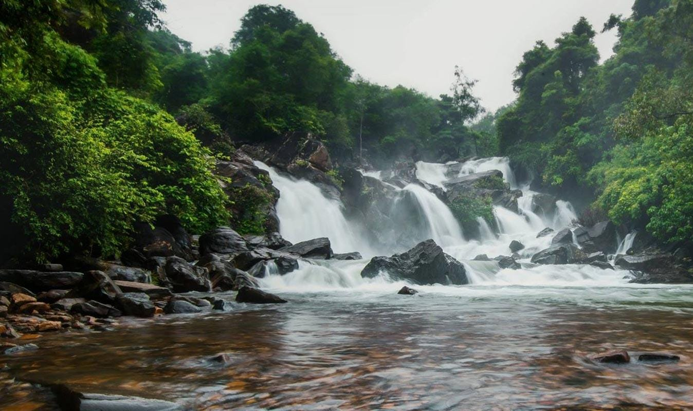
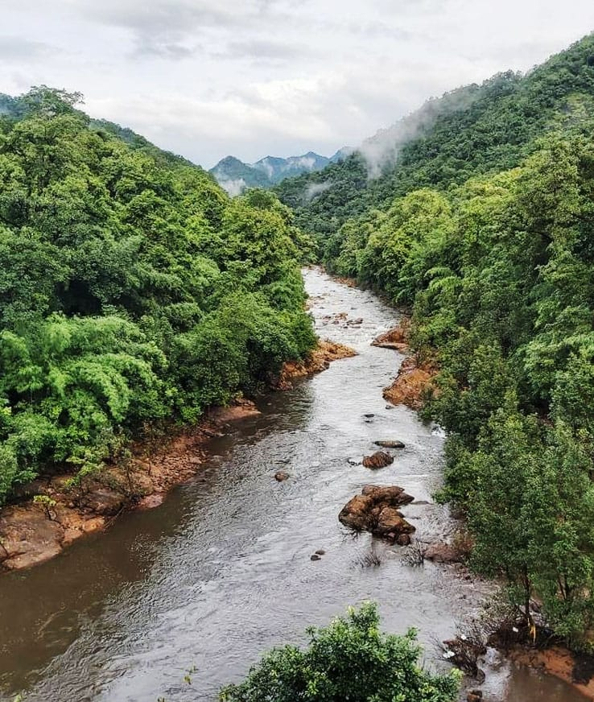
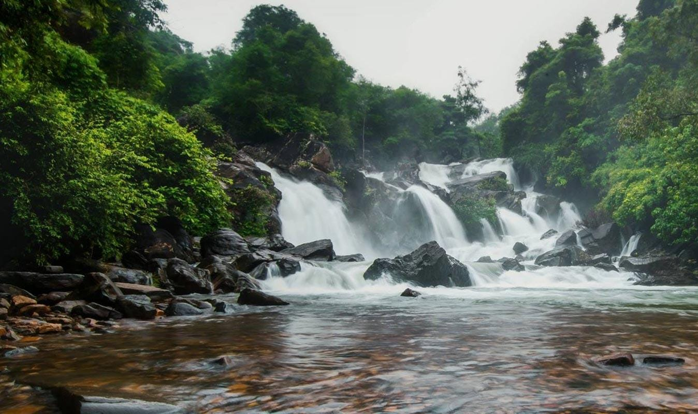
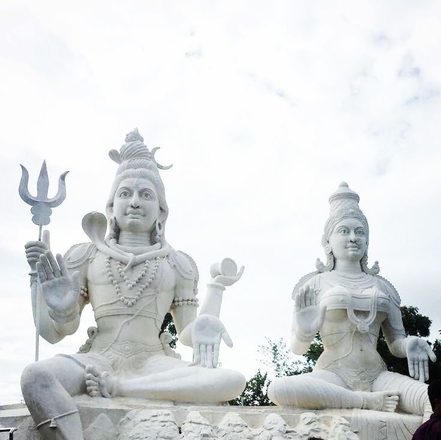
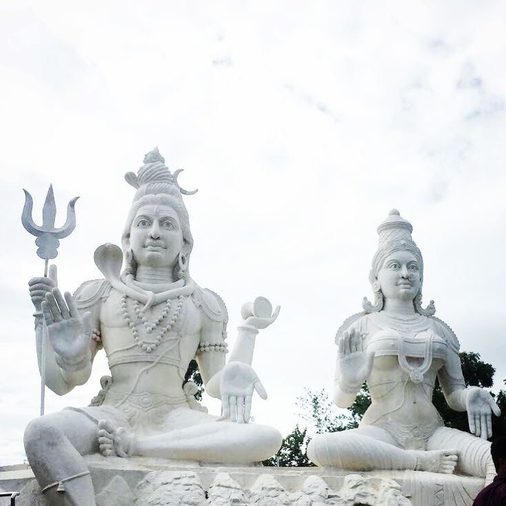

Travel is the movement of people between distant geographical locations. Travel can be done by foot, bicycle, automobile, train, boat, bus, airplane, ship or other means, with or without luggage, and can be one way or round trip.Travel can also include relatively short stays between successive movements, as in the case of tourism.Travel involves moving from one place to another for leisure, business, or personal reasons. It encompasses destination choice, preparation, the journey, experiencing new environments, and returning home. Key aspects include selecting a destination based on interests and budget, organizing logistics, the actual travel, engaging with local culture and attractions, and reflecting on the experience upon return. Travel enriches perspectives by offering relaxation, adventure, and learning opportunities.
Click Hear| SNo. | Trip Name | Location Name | Month,Year |
|---|---|---|---|
| 1 | Family Trip | Maredumilli,Badrachalam | Oct,2022 |
| 2 | Collage Trip | Lambasingi,Araku,Vizag | Feb ,2023 |
| 3 | Girls Trip | Varkala,Thiruvsnsnthspuram | Dec ,2023 |
| 4 | Cousins Trip | Mahabaleswar,Bhimashankar | May ,2024 |


The Maredumilli Forests of East Godavari District are having rich biodiversity and the area is having semi evergreen forests with undulating terrain, which forms part of the Eastern Ghats.T he Maredumilli Community Conservation & Eco Tourism Area is situated on Maredumilli – Bhadrachalam road, nearly 4 Km. away from Maredumilli village. The area is having many streams flowing over the undulating rocks in the deep woods and any visitor feel thrilling experience in the Nature. The Eco-tourism project is managed by the local indigenous tribal community of Valamuru, Somireddypalem and Valmeekipeta Vana Samrkshana Samithi people with the active support of Andhra Pradesh Forest Department. The project was successfully completed in a short span of time due to the commitment of the highly motivated community participation coupled with the timely financial assistance from the World Bank aided Andhra Pradesh Community Forest Management Project. This also provided unique opportunity to the native ethnic community to spread the message of conservation to the masses.The jungle star campsite is located adjoining the Valamuru river with the stream flowing on 3 sides overlooking the Vali-Sugriva Konda which is believed to be the battle ground of the Vali-Sugriva during the Ramayana period. The remarkable variation of the battleground with the presence of grass land, encircled by forests on the other hillocks makes the visitor to pay attention on the legendary story. As a part of Tourism Development Maredumilli Forest Rest House was constructed in the year 1914, the Forest Rest House is in Maredumilli Village with all facilities. The name of the rest house is Abhayaranya Forest Rest House. Suits are available here for stay of Tourists.
Click HearBhadrachalam is a key town of Pilgrimage importance located in the Khammam District of Telangana. The temple town of Bhadrachalam is situated on the banks of Godavari River. It was part of East Godavari District, Andhra Pradesh till 1959. The town is synonymous for its famous temple devoted to Lord Rama. Bhadrachalam Revenue division is considered one of the largest revenue divisions in the country, which was transferred to Khammam district of Telangana region for administrative purposes.The central icon features the four-armed Vaikuntha Rama, the form Vishnu appeared in to answer Bhadra'a prayers. Rama's consort Sita and brother Lakshmana form part of the central icon. By some accounts the Bhadrachalam temple was built, and other accounts repaired by the legendary Bhakti saint Kancherla Gopanna – also known as Bhadrachala Ramadasu – in the 17th century. Gopana was the revenue officer of Bhadrachalam under the reign of the last Sultan of Golconda, Abul Hasan Qutb Shah (Tana Shah). Gopana was accused and arrested of using funds meant for the Sultanate treasury to build the Sita Ramachandraswamy temple. He spent 12 years in jail, where he composed bhakti songs still sung at this temple. Before Golconda Sultanate collapsed during Aurangzeb's expansion of the Mughal control of the Deccan region, Gopana was released by Sultan Tana Shah when Lord Rama himself appeared with Lakshmana to pay the gold coins Sultan demanded for Gopana's release. Gopana then continued to compose poems dedicated to Rama in this temple.
Click HearLambasingi (or Lammasingi) is a small village in the Eastern Ghats of Chintapalli Mandal of Alluri Sitharama Raju district in the Indian state of Andhra Pradesh. It's also referred as "The Kashmir of Andhra Pradesh". With an altitude that of 1000 m (3280 ft) above sea level, the area is cooler than the surrounding plains and is covered in moist deciduous forest cover. There are several coffee, pine, and eucalyptus plantations around the area and some small attempts to grow apple and strawberry. The region was formerly densely covered in forests and known in the past to have supported tigers.The large wildlife in the region includes gaur.The region is known for its diversity of bird life which were studied by numerous ornithologists including Trevor Price, Dillon Ripley, Bruce Beehler and K. S. R. Krishna Raju.
Click HearBordered by towering mountains and lush forests, the valley makes for an ideal spot to relax and nourish your soul. Located at a height of 2,990 ft, the mountain ranges of the Eastern Ghats make for a great escape for nature lovers and adventure enthusiasts.
Various indigenous ways of living are exhibited in the museum through the display of objects of daily use such as jewellery, hunting tools and kitchen tools. Scenes of quotidian life are staged through the arrangement and construction of life-sized statues. The museum itself is fashioned out of mud and metal.
They market 60 varieties of coffees and an array of 600 coffee-chocolates. Visitors can satiate their hunger and appease their craving by indulging in delicacies such as chocolates, sandwiches, brownies, mousses, tarts, etc and savor stimulating coffees. Location: Visakhapatnam Road, Araku, Andhra Pradesh.
 

Visakhapatnam Port is the fifth-busiest cargo port in India. The city is a major tourist destination and is known for its beaches, ancient Buddhist sites, and the natural environment of the surrounding Eastern Ghats.[31] It is nicknamed as the "City of Destiny" and the "Jewel of the East Coast".The city was ruled by the Andhra Kings of Vengi and Pallavas. The city is named after Sri Visakha Varma. Legend has it that Radha and Viśakha were born on the same day and were equally beautiful. Sri Visakka Sakhi is the second most important gopi of the eight main gopis. She carries messages between Radha and Krishna and is the most expert Gopi messenger. Residents believe that an Andhra king built a temple to pay homage to his family deity Viśakha. This is now inundated under seawater near R K Beach. Another theory is that it is named after a woman disciple of Buddha named Viśakha.
Click HearVarkala is renowned for its stunning cliffside views overlooking the Arabian Sea, creating a breathtaking backdrop for relaxation and exploration. The town's iconic cliff, known as the Varkala Cliff, is a geological wonder that attracts visitors from far and wide.In the mid to late 20th century, international tourists began to take notice of Varkala's natural beauty, leading to a steady increase in visitor numbers. It became especially popular among backpackers and the more adventurous travelers looking for untouched beaches and a spiritually enriching atmosphere.The temple town has been witnessing tourist arrivals of more than 20 lakh annually for the last four years. The hill station of Munnar recorded a footfall of 6,28,427 last year with an increase of 34.31% over 2016.
Jatayu Earth Center, also known as Jatayu Nature Park or Jatayu Rock, is a park and tourism centre at Chadayamangalam in Kollam district of Kerala, India. It stands at an altitude of 350m (1200ft) above the mean sea level. Jatayu Nature Park holds the distinction of having the world’s largest bird sculpture, which is of Jatayu.[2]
The sculpture measures 200 feet (61 m) long, 150 feet (46 m) wide, 70 feet (21 m) in height and occupies 15,000 square feet (1,400 m2) of floor area). It was sculpted by Rajiv Anchal
Mangroves in Kerala are an important part of the state's ecosystem. Among the Mangroves in Kerala, Kannur has the longest stretch of Mangrove Forests, spanning about 7.55 sq. km. The Mangroves in Kannur sums to about half the total Mangroves in Kerala.Mangroves in Kerala are an interesting collection of the thick growth of weird plants that grow in the marshy lands along the rivers and backwaters in Kerala. Though growing in the dirt, Mangroves are the real protector of the Land. A real soul purifier of the Rivers.
Mangroves are known by the different names of Tidal Forests, Coastal Forests, Coastal Woodlands, Walking Forests, and Oceanic Forests etc. Locally known in Kerala as the ‘Kandal’, the Mangroves are one of the most productive ecosystems.
Sree Padmanabhaswamy is the tutelary deity of the royal family of Travancore. The titular Maharaja of Travancore Moolam Thirunal Rama Varma is the trustee of the temple. The name of the city of Thiruvananthapuram in Malayalam translates to “The City of Lord Ananta”,referring to the deity of Padmanabhaswamy Temple.The legends of the Temple are handed down through the centuries. One such legend which finds a place in the old palm leaf records of the Temple, as also in the famous grantha entitled “Ananthasayana Mahatmya”, mentions that it was consecrated by a Tulu Brahmin hermit named Divakara Muni. On the 950th year of Kali Yuga a reinstallation of the idol was done. In the 960th Kali year King Kotha Marthandan built the Abhisravana Mandapam.The principal deity Vishnu is enshrined in the “Anantha Shayanam” posture, the eternal yogic sleep on the serpent Adisheshan.
The Aazhimala Shiva Temple is a Hindu temple located on the coast of the Arabian Sea near Vizhinjam in the Thiruvananthapuram district of Kerala, India. Dedicated to Shiva, the temple is known for the 18 m (58 ft) tall Gangadhareshwara sculpture, which is the tallest Shiva sculpture in Kerala.[1] The temple is built in a style resembling the architecture of Tamil Nadu. It is governed by the Aazhimala Shiva Temple Devaswom Trust.The temple is located in Pulinkudi in the panchayat of Kottukal in Thiruvananthapuram district, Kerala. It is situated 0.8 km (0.50 mi) off Vizhinjam–Poovar road near a cliff adjacent to the beach.
Mahabaleshwar comprises three villages: Malcolm Peth, Old "Kshetra" Mahabaleshwar, and part of the Shindola village. The Mahabaleshwar region is the source of the Krishna River that flows east across Maharashtra, Karnataka, Telangana, and Andhra Pradesh towards the Bay of Bengal. Three tributaries of Krishna, namely Koyna, Venna (Veni) and Gayatri, also have their source in Mahabaleshwar region. A fourth river, the Savitri, also has its source in the region, but flows Westward via Mahad to the Arabian Sea. The area's climate is suitable for cultivation of strawberries; Mahabaleshwar strawberry contributes to about 85 percent of the total strawberry production in the country. It also received the geographical indication (GI) tag in 2010.Mahabaleshwar is a popular tourist destination in Maharashtra. Attractions include many hill side look out points with views of surrounding hills, valleys and forests such as Bombay Point, Arthur Seat, Kates Point, Lodwick-Wilson Point, and Elphinston Point. Wilson Point is the only location in Mahabaleshwar where both the sunrise and sunset can be seen. The town also has a man-made lake dating back to British era called Venna Lake. The lake is a popular place for boating. It is surrounded by a market and food stalls that are popular with the tourists.[33] Other attractions include the Lingmala waterfall. Old Mahabaleshwar is a place of pilgrimage with its Mahadeo temple. The temple is the source of the five rivers Krishna, Koyna, Venna, Savitri and Gayatri.Being a relatively cool place, many temperate region crops such as strawberries, raspberries, and mulberries have been grown in Mahabaleshwar and surrounding hills. Principal amongst these crops is Strawberries. Strawberry plantations, and the produce they offer are also a popular tourist activity. The Mahabaleshwar strawberry was granted the geographical indication (GI) tag in 2010.As a popular tourist destination, Mahabaleshwar has hotels and accommodation to suit different budgets.
Click Hear